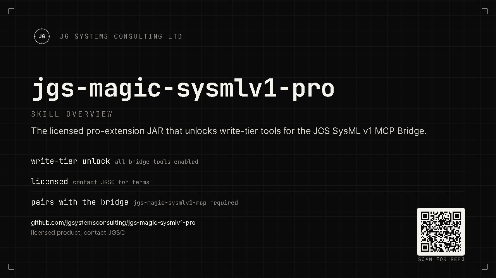

Dynamically loaded
The free plugin loads this JAR via URLClassLoader at startup. No separate install of an application, no extra process.
JG Systems Consulting Ltd. · CATIA Magic MCP
This is the licensed pro-extension JAR for the JGS SysML v1 MCP Bridge, not a standalone app. The free base plugin loads it at CATIA Magic startup and, with a valid licence, unlocks the write-tier and pro tool set. Your AI agent stops just reading the model and starts authoring it. Everything stays on your workstation.

§01 · What this is
A single artifact: jgs-sysmlv1-pro.jar. It has no entry point of its own.
The free SysML v1 MCP Bridge plugin discovers and loads it dynamically when CATIA Magic starts.
Once loaded against a valid licence, the pro and write-tier tools become available to any
connected MCP agent through the free bridge.
The free plugin loads this JAR via URLClassLoader at startup. No separate install of an application, no extra process.
Pro tools activate only with a valid offline licence file. No licence, no write tier, and the free read tools still work.
Ships with a SHA-256 digest in RELEASE-INFO.txt so you can confirm the JAR you load is the one we published.
§02 · The load chain
The pro JAR sits at the end of a short, deterministic startup sequence. If any link is missing (the free plugin, the JAR, or the licence), it degrades gracefully to the free tools.
The free SysML v1 MCP Bridge base plugin loads first. It must already be installed, because the pro JAR does nothing on its own.
It looks in its jgs-pro/ directory and loads jgs-sysmlv1-pro.jar if present.
With a valid licence the pro + write-tier tools register; without one, the bridge stays on free read-only tools.
§03 · Install
Customers receive this JAR in their licence bundle. Place it in the free plugin's pro directory and restart CATIA Magic. This step runs on your desktop app. An AI agent can copy the file and verify the digest, but cannot install a host plugin or restart the host for you.
The free SysML v1 MCP Bridge base plugin is installed and working.
Place it under the free plugin's jgs-pro/ directory, then restart CATIA Magic.
Check sha256 against RELEASE-INFO.txt before loading.
# place the JAR, then verify integrity before loading cp jgs-sysmlv1-pro.jar <CATIA Magic install>/plugins/<plugin-dir>/jgs-pro/ sha256sum jgs-sysmlv1-pro.jar # must equal jar_sha256 in RELEASE-INFO.txt
Prefer your AI agent do it? The README carries a paste-in install prompt.
Pro tier
The free bridge reads your model. This pro extension lets your agent author and refactor it (create requirements, wire allocations, fix findings, draft diagrams) at the speed you can describe them, all on your own machine.